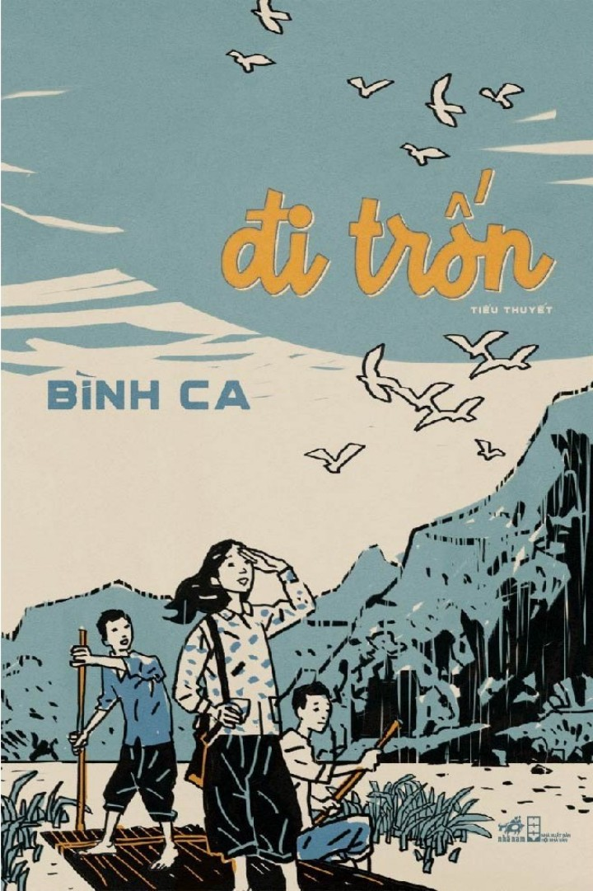

« Back
Đi Trốn
By Bình Ca

MỘT CÂU CHUYỆN SINH ĐỘNG VÀ CẢM ĐỘNG
PHẦN I SƠ TÁN1. TỰ THẮNG
2. SƠ TÁN
3. TẾT
4. KÍP NỔ
5. NHÀ KỶ LUẬT
6. ĐI TRỐN
PHẦN II HỒ MÂY7. HỔ MANG CHÚA
8. HOÀI NAM
9. KHÚC GỖ MỐC
10. ĐỘNG NGƯỜI XƯA
11. VÁCH ĐÁ MA
12. THẢO
13. HỒ MÂY
14. TIẾNG ĐÀN TRONG NÚI
15. TUYỆT LỘ
16. ĐI SĂN
PHẦN III MÊ CUNG17. DÒNG SÔNG NGẦM
18. CÔ TIÊN VÀ ĐÀO TIÊN
19. CON TẮC DỘC
20. HANG RỒNG
21. THUNG LÚA
22. HANG ĐỊA LINH
23. LINH VÀ VIỆT BẮC
24. HY VỌNG CUỐI CÙNG
25. THÚ DỮ
26. TRỞ VỀ
27. NHỮNG NĂM SAU
VĨ THANH